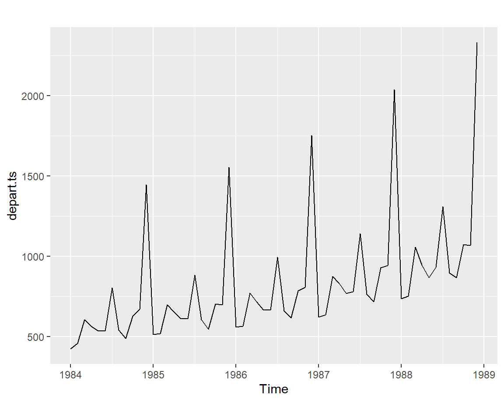

Chapter 1 시계열 그래프
모든 통계자료 분석의 첫 번째 단계는 적절한 그래프를 작성하는 것이다. 자료의 전체 모습을 확인하는데 자료의 시각화 만큼 효과적인 방법도 없을 것이다. 시계열분석에서도 이 규칙은 예외 없이 적용된다고 할 수 있다. 그럼 시계열 자료는 어떤 특징을 갖고 있으며, 일반적인 통계 자료와 어떤 차이가 있는지 알아보도록 하자.
1.1 시계열 자료
동일한 대상을 시간의 흐름에 따라 계속해서 관측할 수 있는데, 이러한 과정에서 생성된 자료를 시계열자료라고 한다. 시계열자료에는 기온과 같이 연속적으로 생성은 되지만 일정한 간격을 두고 관측하는 연속 시계열 자료가 있고, 일일 전기 소비량과 같이 자료의 생성 및 관측에 일정한 간격이 있는 이산 시계열 자료가 있다. 이 책에서는 이산 시계열 자료를 대상으로 하는 분석 기법을 다루고자 한다.
일정한 간격을 두고 관측되는 시계열 자료의 관측 시점의 차이를 시차 (time lag)라고 한다.
1.1.1 종단 자료(cross-sectional data)와의 비교
시계열 자료는 여러 시점에 걸쳐서 동일 개체에 대하여 반복해서 관측된 자료를 의미한다. 반면에 종단 자료는 어느 특정 시점에서 여러 개체에 대해 관측된 자료를 의미한다. 두 형태의 자료에 대한 예로써 다음의 표를 살펴보자.
첫 번째 표는 특정 시점에 4개 기업에 대한 주가, 유동자산 및 부채를 조사한 모의 자료이다. 회귀분석 등으로 분석이 가능한 형태의 자료라고 할 수 있다.
| 기업 | 주가 | 유동자산 | 부채 |
|---|---|---|---|
| A | 56,500 | 95 | 55 |
| B | 24,000 | 20 | 23 |
| C | 86,000 | 110 | 98 |
| D | 12,000 | 32 | 13 |
두 번째 표는 3월 2일부터 3월 5일까지 A 기업과 B 기업의 주가 자료라고 하자. 일일 간격으로 4일 동안 두 기업의 주가를 반복해서 관측한 자료이므로 시계열 자료에 해당한다.
| 일시 | A 기업의 주가 | B 기업의 주가 |
|---|---|---|
| 3.2 | 56,500 | 24,000 |
| 3.3 | 54,200 | 23,100 |
| 3.4 | 54,600 | 22,300 |
| 3.5 | 52,100 | 23,200 |
1.1.2 시계열 예측
통계적 추론을 위한 기본적인 가정은 자료가 서로 독립이고 동일한 분포를 갖고 있다는 것이다. 따라서 통계 자료가 서로 독립이 아니라면 통계적 예측 모형을 효과적으로 적용하기 어렵다고 할 수 있다.
앞 절에서 살펴본 종단자료는 거의 모든 경우에 행의 순서를 뒤섞어도 문제가 되지 않는 자료이기 때문에, 독립성에는 큰 문제가 없는 것이 일반적인 상황이다. 따라서 이러한 형태의 자료에 대해서는 무리 없이 선형회귀모형 등을 적합시켜 예측을 효과적으로 실시할 수 있다.
반면에 시계열자료의 경우에는 예컨대 3월 3일 주가는 3월 2일 주가와 독립이 될 수 없는 상황이다. 따라서 시계열자료에 대한 예측모형은 독립성을 가정하고 있는 일반적인 통계모형을 사용할 수 없는 것이다.
우리는 앞으로 시계열자료를 대상으로 효과적인 예측을 실시할 수 있는 다양한 모형을 살펴볼 것이다. 시계열 예측은 많은 분야에서 필수적인 사항이고, 따라서 전문가가 많이 필요한 분야라고 할 수 있다.
1.2 시계열 그래프 작성
시계열자료는 관측 결과 뿐 아니라 관측이 시작된 시점과 끝난 시점, 관측 간격으로 이루어져 있으며, 이러한 정보를 R에서는 ‘ts’ 객체에 저장할 수 있다.
예를 들어 AirPassengers는 미국 Pam Am 항공사의 1949년부터 1960년까지 월별 항공기 탑승 승객 수가
천 명 단위로 입력되어 있다.
> AirPassengers
Jan Feb Mar Apr May Jun Jul Aug Sep Oct Nov Dec
1949 112 118 132 129 121 135 148 148 136 119 104 118
1950 115 126 141 135 125 149 170 170 158 133 114 140
1951 145 150 178 163 172 178 199 199 184 162 146 166
1952 171 180 193 181 183 218 230 242 209 191 172 194
1953 196 196 236 235 229 243 264 272 237 211 180 201
1954 204 188 235 227 234 264 302 293 259 229 203 229
1955 242 233 267 269 270 315 364 347 312 274 237 278
1956 284 277 317 313 318 374 413 405 355 306 271 306
1957 315 301 356 348 355 422 465 467 404 347 305 336
1958 340 318 362 348 363 435 491 505 404 359 310 337
1959 360 342 406 396 420 472 548 559 463 407 362 405
1960 417 391 419 461 472 535 622 606 508 461 390 432AirPassengers'는ts객체이다. 출력된 형태는 2차원 구조로 보이지만, 벡터와 같은 1차원 배열이다.ts` 객체의 특성은 다음과 같이 알아볼 수 있다.
> class(AirPassengers)
[1] "ts"
> start(AirPassengers)
[1] 1949 1
> end(AirPassengers)
[1] 1960 12
> frequency(AirPassengers)
[1] 12AirPassengers'의 시작 시점은 1949년 1월이고, 종료 시점은 1960년 12월이다. 함수frequency()`는 시계열자료의 주기, 즉 계절 요소의 반복 기간을 보여주고 있다.
만일 일반 벡터를 ts 객체로 변환하려고 한다면, 함수 ts()를 사용해야 한다.
사용법은 ts(data, start, end, frequency)와 같은데, data는 시계열자료로 변환할 벡터이고
start는 자료의 시작점의 지정하는 것으로써, 2020년 1월을 시작점으로 지정한다면 start = c(2020, 1)과 같이
지정하면 된다. end는 자료의 종료 시점을 지정하는 것이며, 방법은 start와 동일하다.
만일 start를 생략한다면 data에 있는 모든 자료가 시계열자료로 변환된다.
frequency는 자료의 주기를 지정하는 것으로써, 연간 자료는 1, 분기별 자료는 4, 월별 자료는 12를 지정하면 된다.
> depart <- scan("Data/depart.txt")
> depart.ts <- ts(depart, start = c(1984, 1), frequency = 12)
> depart.ts
Jan Feb Mar Apr May Jun Jul Aug Sep Oct Nov Dec
1984 423 458 607 564 536 536 804 540 488 627 672 1447
1985 514 518 699 654 612 612 884 605 547 705 698 1555
1986 561 564 773 717 665 667 994 661 616 786 806 1754
1987 622 636 874 831 769 779 1142 764 718 930 943 2039
1988 736 752 1057 947 868 931 1311 896 867 1073 1069 2333> library(fpp2)
Registered S3 method overwritten by 'quantmod':
method from
as.zoo.data.frame zoo
-- Attaching packages ---------------------------------------------- fpp2 2.4 --
v ggplot2 3.3.5 v fma 2.4
v forecast 8.16 v expsmooth 2.3
> autoplot(depart.ts)